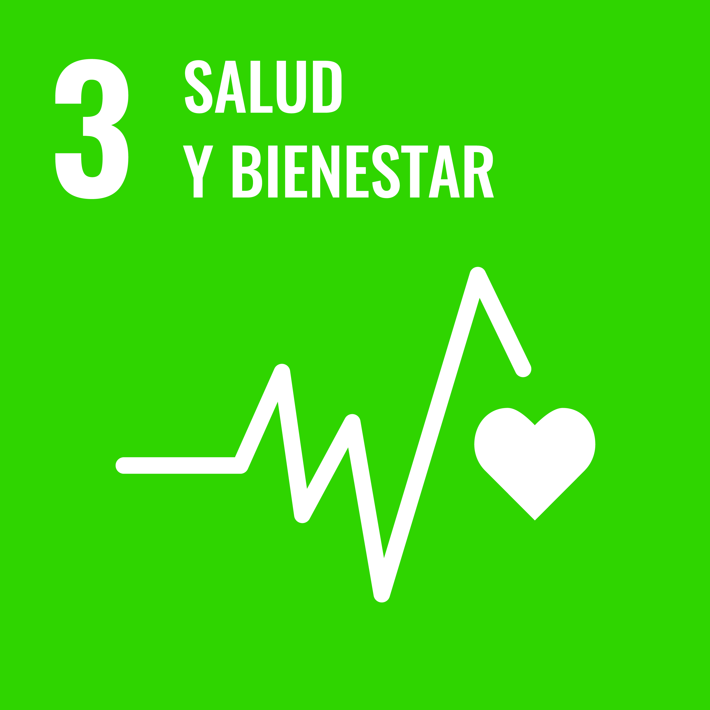
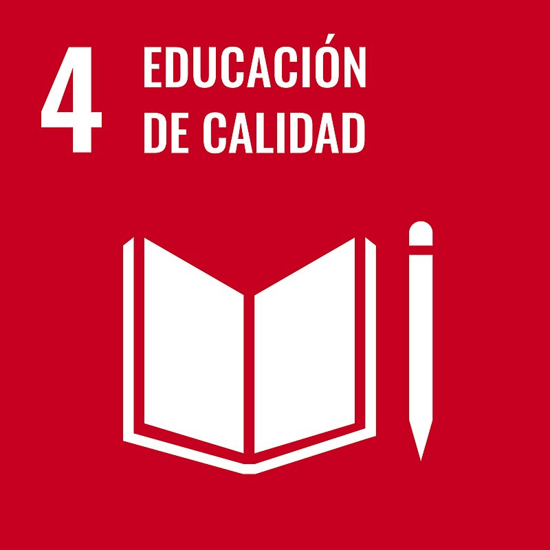
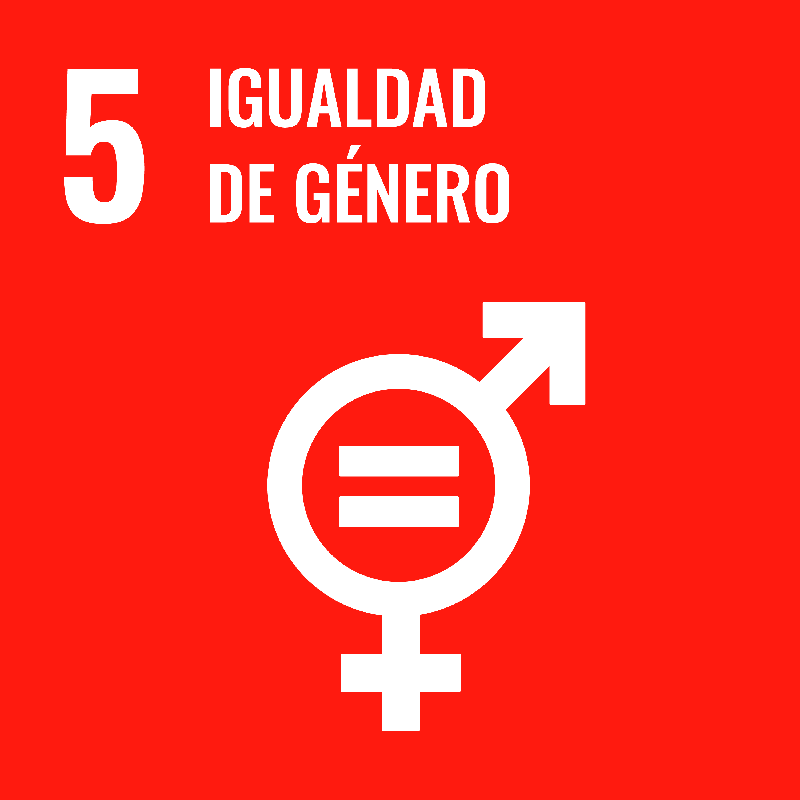
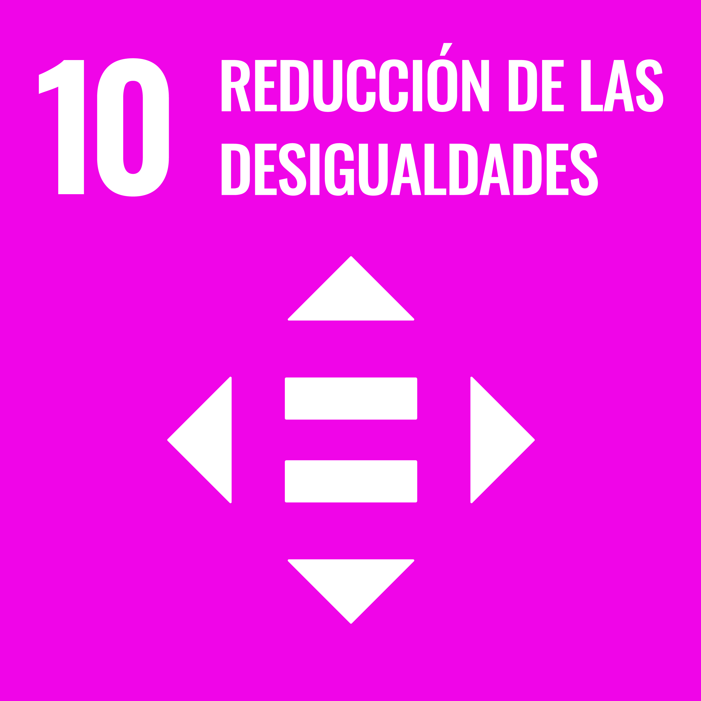

Conociendo a nuestro compañeros
1. Intención educativa
Justificación
La competencia específica 7 nos indica que el alumnado de 1ºESO debe representar conceptos, procedimientos, información y resultados matemáticos de modos distintos y con diferentes herramientas, incluidas las digitales, visualizando ideas, estructurando procesos matemáticos y valorando su utilidad para compartir información.
Para transmitir dichas representaciones y resultados, según indica la competencia específica 8, comunicarán información utilizando el lenguaje matemático apropiado, utilizando diferentes medios, incluidos los digitales, oralmente y por escrito, al describir, explicar y justificar razonamientos, procedimientos y conclusiones.
También nos apoyamos en la competencia específica 6, ya que en los temas objeto del estudio, deberán reconocer situaciones susceptibles de ser formuladas y resueltas mediante herramientas y estrategias matemáticas, estableciendo conexiones entre el mundo real y las matemáticas y usando los procesos inherentes a la investigación: inferir, medir, comunicar, clasificar y predecir.
Por otra parte, para adquirir las competencias específicas del sentido socioafectivo de Matemáticas, deben trabajar en grupo, competencia específica 10. Esta metodología supone una motivación para gran parte del alumnado pero para que mejoren su trabajo cooperativo y la gestión de sus emociones dentro del aula, se les informará de que se les evaluará esta competencia al inicio de la tarea para que tengan en cuenta que el reparto equitativo del trabajo y la inclusión de todos los compañeros será valorado. También se valorará la resiliencia ante problemas técnicos con las tecnologías que en algunas ocasiones genera bloqueos que deben aprender a superar para seguir aprendiendo.
ODS
Como resultado de las temáticas que serán objeto de estudio, esta SdA guarda relación con los siguientes ODS:





Desarrollo de sesiones
Sesión 1
Presentación de la situación de aprendizaje. Introducción al estudio estadístico.
En el aula, el docente introducirá los conceptos de Estadística y estudio estadístico. Pondrá ejemplos de aplicaciones. Se presentará el proyecto a realizar por el alumnado. Se sugerirán temáticas para el estudio, buscando la vinculación con su entorno e invitando a la reflexión sobre sus hábitos. Se tomarán como guía los ODS 2030. Se asignarán los grupos de trabajo.
Elección del tema del estudio
A cada grupo se le asignará un curso del IES como muestra para su estudio. Cada grupo decidirá la temática de su estudio estadístico.
Sesión 2
Concepto de variable estadística
Con la metodología Flipped classroom, los estudiantes deben visualizar un vídeo facilitado por el docente en el que se explica el concepto de variable estadística y los distintos tipos que existen. Para la segunda sesión cada uno traerá a clase 5 variables que podrían estudiarse dentro de la temática escogida por el grupo.
Forms
Elaboración del cuestionario
En el aula, cada grupo elaborará el cuestionario con el que recogerá la información. El docente mostrará ejemplos y dará las siguientes pautas:
Se estudiarán 4 variables (el cuestionario constará de 4 preguntas)
Cada variable tomará como mucho 4 valores distintos.
Debe incluirse una variable de cada tipo
El cuestionario debe elaborarse utilizando Microsoft Forms. En cooperación con la asignatura de Digitalización aplicada, donde se les introduce al manejo de dicha aplicación.
Sesión 3
Recogida de información mediante encuesta.
Cada equipo visitará las aulas donde se encuentran los grupos muestra de su estudio. Les explicarán para qué están recogiendo dicha información y les facilitarán el enlace de Forms para que lo cumplimenten en ese momento.
Sesión 4
Introducción a las tablas estadísticas.
Aplicando la metodología Flipped Classroom, antes de esta sesión los alumnos visualizarán un vídeo facilitado por el docente, donde se muestran ejemplo de tablas estadísticas para los distintos tipos de variable. Para el inicio de la sesión, los alumnos traerán hechos dos ejercicios sencillos.
Consolidación de las tablas estadísticas.
En el aula, se corregirán las actividades y se explicará cómo volcar la información en Excel.
Organización de la información del estudio en tablas estadísticas.
Seguidamente, se acudirá al aula de informática para organizar los datos recogidos. Se trabajará junto con la asignatura de Digitalización aplicada.
Sesión 5
Introducción a los gráficos y parámetros.
Con ayuda del libro de texto y material multimedia aportado por el docente, de nuevo aplicando la metodología Flipped Classroom.
Consolidación de los gráficos y parámetros.
Se dedicará la sesión al trabajo individual en el aula, guiados por el docente y con el libro de texto como referencia.
Sesión 6
Representación de la información en gráficos.
En el aula de informática, aplicarán lo trabajado a su estudio.
Cálculo de parámetros de centralización.
En el aula de informática, aplicarán lo trabajado a su estudio.
Elaboración del informe
Realizarán un breve resumen de los pasos que han seguido en este estudio estadístico.
Sesión 7
Análisis y conclusiones a partir de los gráficos y cálculos realizados.
Puesta en común, reflexión sobre el trabajo realizado. Primero, llevarán a cabo una autoevaluación de su participación en el proyecto y del producto final. Tras la exposición de cada equipo, también se llevará a cabo una coevaluación.
Producto final
El producto final de esta SdA será el propio estudio estadístico llevado a cabo. Se materializará en dos productos finales, complementarios entre sí:
El primero de los productos será una infografía, donde los estudiantes volcarán las conclusiones de su estudio estadístico, además de mostrar el paso paso que han seguido para la realización del estudio.
Posteriormente, para transmitir esta información, el alumnado realizará un podcast.
Obra publicada con Licencia Creative Commons Reconocimiento Compartir igual 4.0